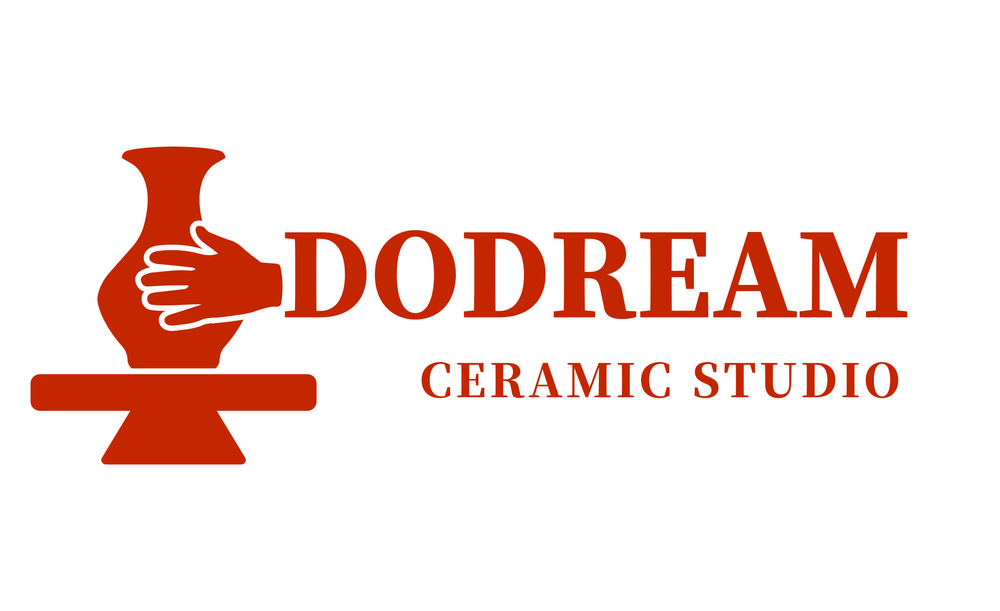
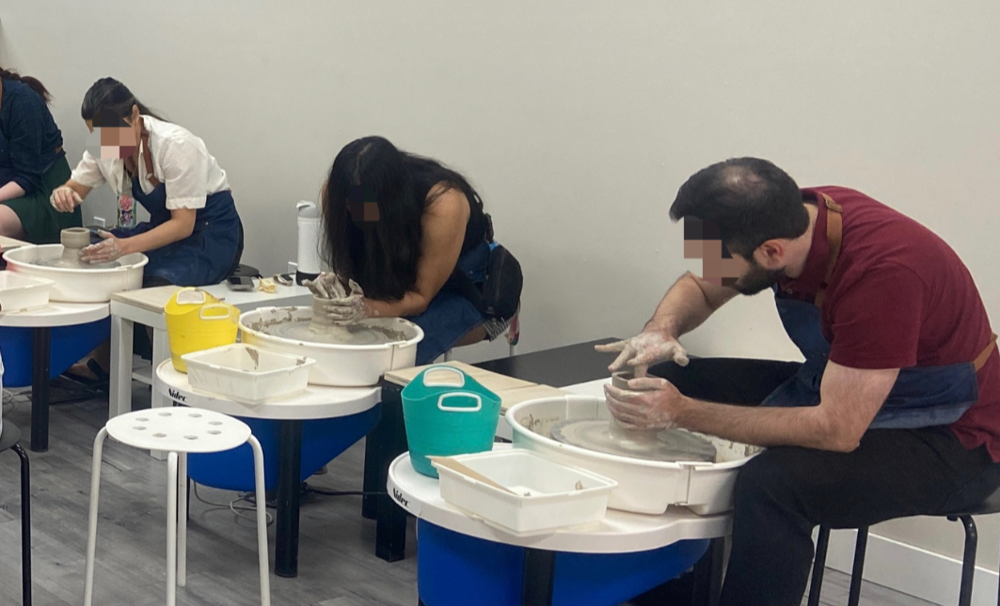
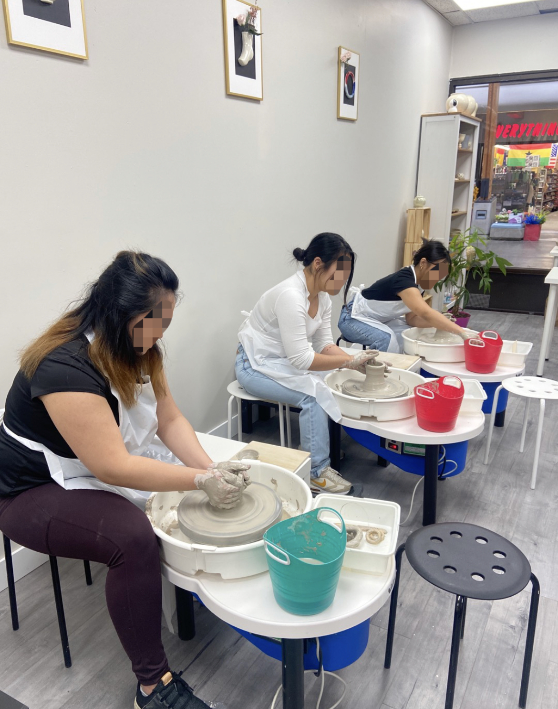
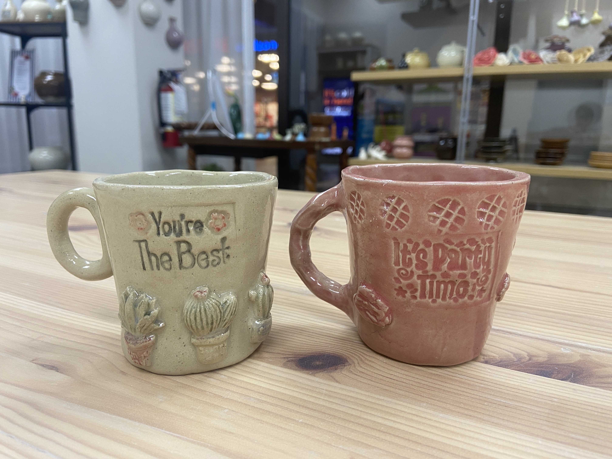
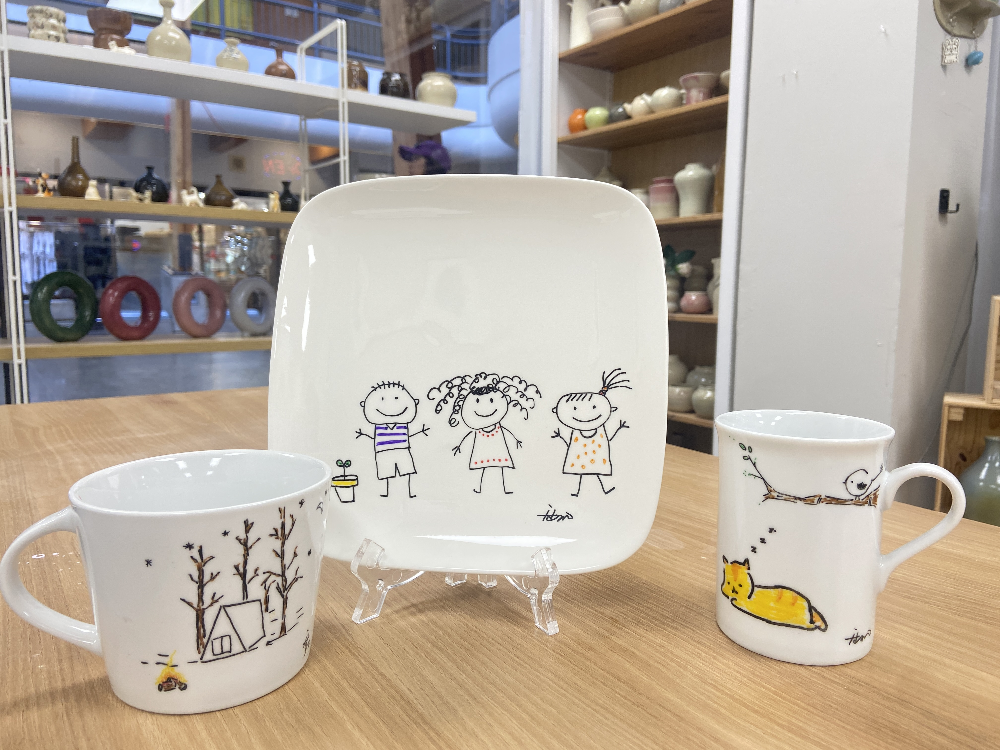
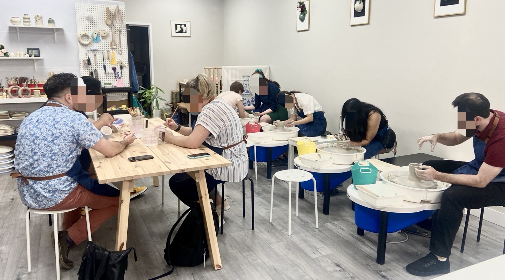
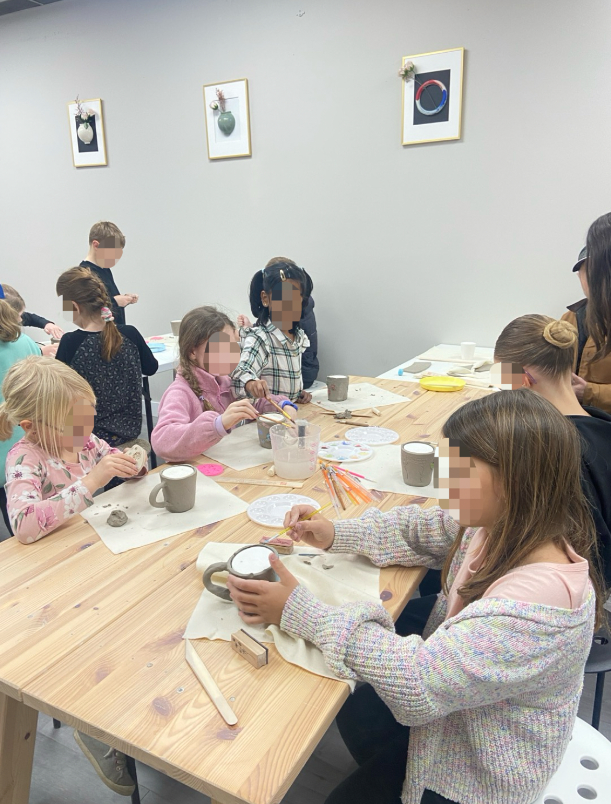

TYPE A
Wheel Throwing
Make: Cup + Bowl
Max 4 people
$95/ person
GST included · clay, glaze, and firing included

Book NowONE-DAY CLASS
Weekday classes are available by booking. No experience is needed; clay, glaze, firing, and guidance are included.


SIX-WEEK SERIES
Build confidence on the wheel with steady, small-group practice. Suitable for beginners.
Please bring: Apron and a small towel
Sept 17 – Oct 22six Thursdays
6:00 – 8:00 PMweekly session
Max 4 studentssmall-group instruction
$320 + GSTclay, tools, firing & instruction
Make-up classes are not available for missed sessions.
DROP-IN CLASS
Weekdays only · Minimum two people · No experience needed

TYPE A
Make your own ceramic cup, then glaze it.
Min. 2 people, weekdays only

TYPE B
Paint a ready-made ceramic piece.
Min. 2 people, weekdays only
GROUPS & CELEBRATIONS

Make: Handled Cup + Bowl
2-hour session · Groups of 6–20
Studio fee $100 + GST per group
Class fee $80 + GST per person

2-hour hand-building session — make a handled cup.
Groups of 6–20
Studio fee $100 + GST per group
Class fee $50 + GST per person
A $50 cancellation fee applies once a group event has been booked.